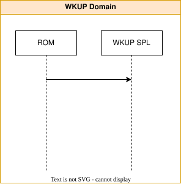
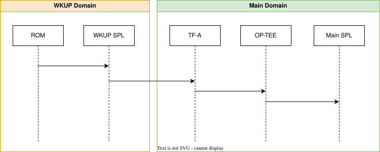
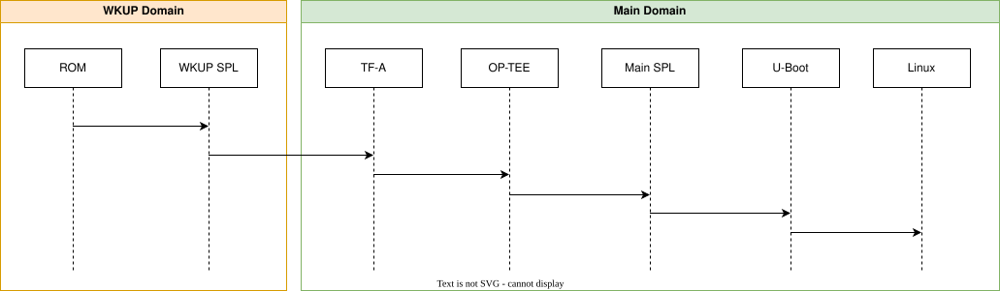
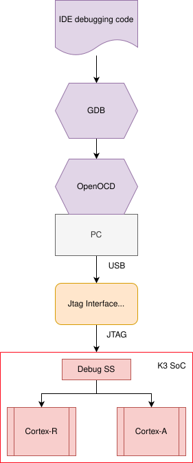

K3 Generation¶
Summary¶
Texas Instrument’s K3 family of SoCs utilize a heterogeneous multicore and highly integrated device architecture targeted to maximize performance and power efficiency for a wide range of industrial, automotive and other broad market segments.
Typically the processing cores and the peripherals for these devices are partitioned into three functional domains to provide ultra-low power modes as well as accommodating application and industrial safety systems on the same SoC. These functional domains are typically called the:
Wakeup (WKUP) domain
Micro-controller (MCU) domain
Main domain
For a more detailed view of what peripherals are attached to each domain, consult the device specific documentation.
Boot Flow Overview¶
For all K3 SoCs the first core started will be inside the Security Management Subsystem (SMS) which will secure the device and start a core in the wakeup domain to run the ROM code. ROM will then initialize the boot media needed to load the binaries packaged inside tiboot3.bin, including a 32bit U-Boot SPL, (called the wakup SPL) that ROM will jump to after it has finished loading everything into internal SRAM.

The wakeup SPL, running on a wakeup domain core, will initialize DDR and any peripherals needed load the larger binaries inside the tispl.bin into DDR. Once loaded the wakeup SPL will start one of the ‘big’ application cores inside the main domain to initialize the main domain, starting with Trusted Firmware-A (TF-A), before moving on to start OP-TEE and the main domain’s U-Boot SPL.

The main domain’s SPL, running on a 64bit application core, has virtually unlimited space (billions of bytes now that DDR is working) to initialize even more peripherals needed to load in the u-boot.img which loads more firmware into the micro-controller & wakeup domains and finally prepare the main domain to run Linux.

This is the typical boot flow for all K3 based SoCs, however this flow offers quite a lot in the terms of flexibility, especially on High Security (HS) SoCs.
Boot Flow Variations¶
All K3 SoCs will generally use the above boot flow with two main differences depending on the capabilities of the boot ROM and the number of cores inside the device. These differences split the bootflow into essentially 4 unique but very similar flows:
Split binary with a combined firmware: (eg: AM65)
Combined binary with a combined firmware: (eg: AM64)
Split binary with a split firmware: (eg: J721E)
Combined binary with a split firmware: (eg: AM62)
For devices that utilize the split binary approach, ROM is not capable of loading the firmware into the SoC requiring the wakeup domain’s U-Boot SPL to load the firmware.
Devices with a split firmware will have two firmwares loaded into the device at different times during the bootup process. TI’s Foundational Security (TIFS), needed to operate the Security Management Subsystem, will either be loaded by ROM or the WKUP U-Boot SPL, then once the wakeup U-Boot SPL has completed, the second Device Management (DM) firmware can be loaded on the now free core in the wakeup domain.
For more information on the bootup process of your SoC, consult the device specific boot flow documentation.
Software Sources¶
All scripts and code needed to build the tiboot3.bin, tispl.bin and u-boot.img for all K3 SoCs can be located at the following places online
Das U-Boot
branch: masterTrusted Firmware-A (TF-A)
branch: masterOpen Portable Trusted Execution Environment (OP-TEE)
branch: masterTI Firmware (TIFS, DM, SYSFW)
branch: ti-linux-firmware
Note
The TI Firmware required for functionality of the system can be one of the following combination (see platform specific boot diagram for further information as to which component runs on which processor):
TIFS - TI Foundational Security Firmware - Consists of purely firmware meant to run on the security enclave.
DM - Device Management firmware also called TI System Control Interface server (TISCI Server) - This component purely plays the role of managing device resources such as power, clock, interrupts, dma etc. This firmware runs on a dedicated or multi-use microcontroller outside the security enclave.
OR
SYSFW - System firmware - consists of both TIFS and DM both running on the security enclave.
Build Procedure¶
Depending on the specifics of your device, you will need three or more binaries to boot your SoC.
tiboot3.bin (bootloader for the wakeup domain)
tispl.bin (bootloader for the main domain)
u-boot.img
During the bootup process, both the 32bit wakeup domain and the 64bit main domains will be involved. This means everything inside the tiboot3.bin running in the wakeup domain will need to be compiled for 32bit cores and most binaries in the tispl.bin will need to be compiled for 64bit main domain CPU cores.
All of that to say you will need both a 32bit and 64bit cross compiler (assuming you’re using an x86 desktop)
S/w Component |
Env Variable |
Description |
|---|---|---|
All Software |
CC32 |
Cross compiler for ARMv7 (ARM 32bit), typically arm-linux-gnueabihf- |
All Software |
CC64 |
Cross compiler for ARMv8 (ARM 64bit), typically aarch64-linux-gnu- |
All Software |
LNX_FW_PATH |
Path to TI Linux firmware repository |
All Software |
TFA_PATH |
Path to source of Trusted Firmware-A |
All Software |
OPTEE_PATH |
Path to source of OP-TEE |
export CC32=arm-linux-gnueabihf-
export CC64=aarch64-linux-gnu-
export LNX_FW_PATH=path/to/ti-linux-firmware
export TFA_PATH=path/to/trusted-firmware-a
export OPTEE_PATH=path/to/optee_os
We will also need some common environment variables set up for the various other build sources. we shall use the following, in the build descriptions below:
S/w Component |
Env Variable |
Description |
|---|---|---|
U-Boot |
UBOOT_CFG_CORTEXR |
Defconfig for Cortex-R (Boot processor). |
U-Boot |
UBOOT_CFG_CORTEXA |
Defconfig for Cortex-A (MPU processor). |
Trusted Firmware-A |
TFA_BOARD |
Platform name used for building TF-A for Cortex-A Processor. |
Trusted Firmware-A |
TFA_EXTRA_ARGS |
Any extra arguments used for building TF-A. |
OP-TEE |
OPTEE_PLATFORM |
Platform name used for building OP-TEE for Cortex-A Processor. |
OP-TEE |
OPTEE_EXTRA_ARGS |
Any extra arguments used for building OP-TEE. |
Building tiboot3.bin¶
To generate the U-Boot SPL for the wakeup domain, use the following commands, substituting
{SOC}for the name of your device (eg: am62x) to package the various firmware and the wakeup UBoot SPL into the final tiboot3.bin binary. (or the sysfw.itb if your device uses the split binary flow)
# inside u-boot source
make $UBOOT_CFG_CORTEXR
make CROSS_COMPILE=$CC32 BINMAN_INDIRS=$LNX_FW_PATH
At this point you should have all the needed binaries to boot the wakeup domain of your K3 SoC.
Combined Binary Boot Flow (eg: am62x, am64x, … )
tiboot3-{SOC}-{gp/hs-fs/hs}.bin
Split Binary Boot Flow (eg: j721e, am65x)
tiboot3-{SOC}-{gp/hs-fs/hs}.binsysfw-{SOC}-{gp/hs-fs/hs}-evm.itb
Note
It’s important to rename the generated tiboot3.bin and sysfw.itb to match exactly tiboot3.bin and sysfw.itb as ROM and the wakeup UBoot SPL will only look for and load the files with these names.
Building tispl.bin¶
The tispl.bin is a standard fitImage combining the firmware need for the main domain to function properly as well as Device Management (DM) firmware if your device using a split firmware.
We will first need TF-A, as it’s the first thing to run on the ‘big’ application cores on the main domain.
# inside trusted-firmware-a source
make CROSS_COMPILE=$CC64 ARCH=aarch64 PLAT=k3 SPD=opteed $TFA_EXTRA_ARGS \
TARGET_BOARD=$TFA_BOARD
Typically all j7* devices will use TARGET_BOARD=generic or TARGET_BOARD =j784s4 (if it is a J784S4 device), while typical Sitara (am6*) devices use the lite option.
The Open Portable Trusted Execution Environment (OP-TEE) is designed to run as a companion to a non-secure Linux kernel for Cortex-A cores using the TrustZone technology built into the core.
# inside optee_os source
make CROSS_COMPILE=$CC32 CROSS_COMPILE64=$CC64 CFG_ARM64_core=y $OPTEE_EXTRA_ARGS \
PLATFORM=$OPTEE_PLATFORM
Finally, after TF-A has initialized the main domain and OP-TEE has finished, we can jump back into U-Boot again, this time running on a 64bit core in the main domain.
# inside u-boot source
make $UBOOT_CFG_CORTEXA
make CROSS_COMPILE=$CC64 BINMAN_INDIRS=$LNX_FW_PATH \
BL31=$TFA_PATH/build/k3/$TFA_BOARD/release/bl31.bin \
TEE=$OPTEE_PATH/out/arm-plat-k3/core/tee-raw.bin
At this point you should have every binary needed initialize both the wakeup and main domain and to boot to the U-Boot prompt
Main Domain Bootloader
tispl.bin for HS devices or tispl.bin_unsigned for GP devicesu-boot.img for HS devices or u-boot.img_unsigned for GP devices
Fit Signature Signing¶
K3 Platforms have fit signature signing enabled by default on their primary platforms. Here we’ll take an example for creating fit image for J721e platform and the same can be extended to other platforms
Describing FIT source
/dts-v1/; / { description = "Kernel fitImage for j721e-hs-evm"; #address-cells = <1>; images { kernel-1 { description = "Linux kernel"; data = /incbin/("Image"); type = "kernel"; arch = "arm64"; os = "linux"; compression = "none"; load = <0x80080000>; entry = <0x80080000>; hash-1 { algo = "sha512"; }; }; fdt-ti_k3-j721e-common-proc-board.dtb { description = "Flattened Device Tree blob"; data = /incbin/("k3-j721e-common-proc-board.dtb"); type = "flat_dt"; arch = "arm64"; compression = "none"; load = <0x83000000>; hash-1 { algo = "sha512"; }; }; }; configurations { default = "conf-ti_k3-j721e-common-proc-board.dtb"; conf-ti_k3-j721e-common-proc-board.dtb { description = "Linux kernel, FDT blob"; fdt = "fdt-ti_k3-j721e-common-proc-board.dtb"; kernel = "kernel-1"; signature-1 { algo = "sha512,rsa4096"; key-name-hint = "custMpk"; sign-images = "kernel", "fdt"; }; }; }; };You would require to change the ‘/incbin/’ lines to point to the respective files in your local machine and the key-name-hint also needs to be changed if you are using some other key other than the TI dummy key that we are using for this example.
Compile U-boot for the respective board
# inside u-boot source
make $UBOOT_CFG_CORTEXA
make CROSS_COMPILE=$CC64 BINMAN_INDIRS=$LNX_FW_PATH \
BL31=$TFA_PATH/build/k3/$TFA_BOARD/release/bl31.bin \
TEE=$OPTEE_PATH/out/arm-plat-k3/core/tee-raw.bin
Note
The changes only affect a72 binaries so the example just builds that
Sign the fit image and embed the dtb in uboot
Now once the build is done, you’ll have a dtb for your board that you’ll be passing to mkimage for signing the fitImage and embedding the key in the u-boot dtb.
mkimage -r -f fitImage.its -k $UBOOT_PATH/board/ti/keys -K $UBOOT_PATH/build/a72/dts/dt.dtbFor signing a secondary platform, pass the -K parameter to that DTB
mkimage -f fitImage.its -k $UBOOT_PATH/board/ti/keys -K $UBOOT_PATH/build/a72/arch/arm/dts/k3-j721e-sk.dtbNote
If changing CONFIG_DEFAULT_DEVICE_TREE to the secondary platform, binman changes would also be required so that correct dtb gets packaged.
diff --git a/arch/arm/dts/k3-j721e-binman.dtsi b/arch/arm/dts/k3-j721e-binman.dtsi index 673be646b1e3..752fa805fe8d 100644 --- a/arch/arm/dts/k3-j721e-binman.dtsi +++ b/arch/arm/dts/k3-j721e-binman.dtsi @@ -299,8 +299,8 @@ #define SPL_J721E_SK_DTB "spl/dts/k3-j721e-sk.dtb" #define UBOOT_NODTB "u-boot-nodtb.bin" -#define J721E_EVM_DTB "u-boot.dtb" -#define J721E_SK_DTB "arch/arm/dts/k3-j721e-sk.dtb" +#define J721E_EVM_DTB "arch/arm/dts/k3-j721e-common-proc-board.dtb" +#define J721E_SK_DTB "u-boot.dtb"
Rebuilt u-boot
This is required so that the modified dtb gets updated in u-boot.img
# inside u-boot source
make $UBOOT_CFG_CORTEXA
make CROSS_COMPILE=$CC64 BINMAN_INDIRS=$LNX_FW_PATH \
BL31=$TFA_PATH/build/k3/$TFA_BOARD/release/bl31.bin \
TEE=$OPTEE_PATH/out/arm-plat-k3/core/tee-raw.bin
(Optional) Enabled FIT_SIGNATURE_ENFORCED
By default u-boot will boot up the fit image without any authentication as such if the public key is not embedded properly, to check if the public key nodes are proper you can enable FIT_SIGNATURE_ENFORCED that would not rely on the dtb for anything else then the signature node for checking the fit image, rest other things will be enforced such as the property of required-keys. This is not an extensive check so do manual checks also
This is by default enabled for devices with TI_SECURE_DEVICE enabled.
Note
The devices now also have distroboot enabled so if the fit image doesn’t work then the fallback to normal distroboot will be there on hs devices, this will need to be explicitly disabled by changing the boot_targets.
Saving environment¶
SAVEENV is disabled by default and for the new flow uses Uenv.txt as the default way for saving the environments. This has been done as Uenv.txt is more granular then the saveenv command and can be used across various bootmodes too.
Writing to MMC/EMMC
env export -t $loadaddr <list of variables>
fatwrite mmc ${mmcdev} ${loadaddr} ${bootenvfile} ${filesize}
Reading from MMC/EMMC
By default run envboot will read it from the MMC/EMMC partition ( based on mmcdev) and set the environments.
If manually needs to be done then the environment can be read from the filesystem and then imported
fatload mmc ${mmcdev} ${loadaddr} ${bootenvfile}
env import -t ${loadaddr} ${filesize}
Common Debugging environment - OpenOCD¶
This section will show you how to connect a board to OpenOCD and load the SPL symbols for debugging with a K3 generation device. To follow this guide, you must build custom u-boot binaries, start your board from a boot media such as an SD card, and use an OpenOCD environment. This section uses generic examples, though you can apply these instructions to any supported K3 generation device.
The overall structure of this setup is in the following figure.

Note
If you find these instructions useful, please consider donating to OpenOCD.
Step 1: Download and install OpenOCD¶
To get started, it is more convenient if the distribution you use supports OpenOCD by default. Follow the instructions in the getting OpenOCD documentation to pick the installation steps appropriate to your environment. Some references to OpenOCD documentation:
Refer to the release notes corresponding to the OpenOCD version to ensure
Processor support: In general, processor support shouldn’t present any difficulties since OpenOCD provides solid support for both ARMv8 and ARMv7.
SoC support: When working with System-on-a-Chip (SoC), the support usually comes as a TCL config file. It is vital to ensure the correct version of OpenOCD or to use the TCL files from the latest release or the one mentioned.
Board or the JTAG adapter support: In most cases, board support is a relatively easy problem if the board has a JTAG pin header. All you need to do is ensure that the adapter you select is compatible with OpenOCD. Some boards come with an onboard JTAG adapter that requires a USB cable to be plugged into the board, in which case, it is vital to ensure that the JTAG adapter is supported. Fortunately, almost all TI K3 SK/EVMs come with TI’s XDS110, which has out of the box support by OpenOCD. The board-specific documentation will cover the details and any adapter/dongle recommendations.
openocd -v
Note
OpenOCD version 0.12.0 is usually required to connect to most K3 devices. If your device is only supported by a newer version than the one provided by your distribution, you may need to build it from the source.
Building OpenOCD from source¶
The dependency package installation instructions below are for Debian systems, but equivalent instructions should exist for systems with other package managers. Please refer to the OpenOCD Documentation for more recent installation steps.
# Check the packages to be installed: needs deb-src in sources.list
sudo apt build-dep openocd
# The following list is NOT complete - please check the latest
sudo apt-get install libtool pkg-config texinfo libusb-dev \
libusb-1.0.0-dev libftdi-dev libhidapi-dev autoconf automake
git clone https://github.com/openocd-org/openocd.git openocd
cd openocd
git submodule init
git submodule update
./bootstrap
./configure --prefix=/usr/local/
make -j`nproc`
sudo make install
Note
The example above uses the GitHub mirror site. See git repo information information to pick the official git repo. If a specific version is desired, select the version using git checkout tag.
Installing OpenOCD udev rules¶
The step is not necessary if the distribution supports the OpenOCD, but if building from a source, ensure that the udev rules are installed correctly to ensure a sane system.
# Go to the OpenOCD source directory
cd openocd
Copy the udev rules to the correct system location
sudo cp ./contrib/60-openocd.rules \
./src/jtag/drivers/libjaylink/contrib/99-libjaylink.rules \
/etc/udev/rules.d/
# Get Udev to load the new rules up
sudo udevadm control --reload-rules
# Use the new rules on existing connected devices
sudo udevadm trigger
Step 2: Setup GDB¶
Most systems come with gdb-multiarch package.
# Install gdb-multiarch package
sudo apt-get install gdb-multiarch
Though using GDB natively is normal, developers with interest in using IDE may find a few of these interesting:
Warning
LLDB support for OpenOCD is still a work in progress as of this writing. Using GDB is probably the safest option at this point in time.
Step 3: Connect board to PC¶
There are few patterns of boards in the ecosystem
Integrated JTAG adapter/dongle: The board has a micro-USB connector labelled XDS110 USB or JTAG. Connect a USB cable to the board to the mentioned port.
Note
There are multiple USB ports on a typical board, So, ensure you have read the user guide for the board and confirmed the silk screen label to ensure connecting to the correct port.
cTI20 connector: The TI’s cTI20 connector is probably the most prevelant on TI platforms. Though many TI boards have an onboard XDS110, cTI20 connector is usually provided as an alternate scheme to connect alternatives such as Lauterbach or XDS560.
To debug on these boards, the following combinations is suggested:
Cable such as Tag-connect ribbon cable
Adapter to convert cTI20 to ARM20 such as those from Segger or Lauterbach LA-3780 Or optionally, if you have manufacturing capability then you could try BeagleBone JTAG Adapter
Warning
XDS560 and Lauterbach are proprietary solutions and is not supported by OpenOCD. When purchasing an off the shelf adapter/dongle, you do want to be careful about the signalling though. Please read for additional info.
Tag-Connect: Tag-Connect pads on the boards which require special cable. Please check the documentation to identify if “legged” or “no-leg” version of the cable is appropriate for the board.
To debug on these boards, you will need:
Tag-Connect cable appropriate to the board such as TC2050-IDC-NL
In case of no-leg, version, a retaining clip
Tag-Connect to ARM20 adapter
Note
You can optionally use a 3d printed solution such as Protective cap or clip to replace the retaining clip.
Warning
With the Tag-Connect to ARM20 adapter, Please solder the “Trst” signal for connection to work.
Debugging with OpenOCD¶
Debugging U-Boot is different from debugging regular user space applications. The bootloader initialization process involves many boot media and hardware configuration operations. For K3 devices, there are also interactions with security firmware. While reloading the “elf” file works through GDB, developers must be mindful of cascading initialization’s potential consequences.
Consider the following code change:
--- a/file.c 2023-07-29 10:55:29.647928811 -0500
+++ b/file.c 2023-07-29 10:55:46.091856816 -0500
@@ -1,3 +1,3 @@
val = readl(reg);
-val |= 0x2;
+val |= 0x1;
writel(val, reg);
Re-running the elf file with the above change will result in the register setting 0x3 instead of the intended 0x1. There are other hardware blocks which may not behave very well with a re-initialization without proper shutdown.
To help narrow the debug down, it is usually simpler to use the standard boot media to get to the bootloader and debug only in the area of interest.
In general, to debug u-boot spl/u-boot with OpenOCD there are three steps:
Modify the code adding a loop to allow the debugger to attach near the point of interest. Boot up normally to stop at the loop.
Connect with OpenOCD and step out of the loop.
Step through the code to find the root of issue.
Typical debugging involves a few iterations of the above sequence. Though most bootloader developers like to use printf to debug, debug with JTAG tends to be most efficient since it is possible to investigate the code flow and inspect hardware registers without repeated iterations.
Code modification¶
start.S: Adding an infinite while loop at the very entry of U-Boot. For this, look for the corresponding start.S entry file. This is usually only required when debugging some core SoC or processor related function. For example: arch/arm/cpu/armv8/start.S or arch/arm/cpu/armv7/start.S
diff --git a/arch/arm/cpu/armv7/start.S b/arch/arm/cpu/armv7/start.S
index 69e281b086..744929e825 100644
--- a/arch/arm/cpu/armv7/start.S
+++ b/arch/arm/cpu/armv7/start.S
@@ -37,6 +37,8 @@
#endif
reset:
+dead_loop:
+ b dead_loop
/* Allow the board to save important registers */
b save_boot_params
save_boot_params_ret:
board_init_f: Adding an infinite while loop at the board entry function. In many cases, it is important to debug the boot process if any changes are made for board-specific applications. Below is a step by step process for debugging the boot SPL or Armv8 SPL:
To debug the boot process in either domain, we will first add a modification to the code we would like to debug. In this example, we will debug
board_init_finsidearch/arm/mach-k3/{soc}_init.c. Since some sections of U-Boot will be executed multiple times during the bootup process of K3 devices, we will need to include eitherCONFIG_ARM64orCONFIG_CPU_V7Rto catch the CPU at the desired place during the bootup process (Main or Wakeup domains). For example, modify the file as follows (depending on need):
void board_init_f(ulong dummy)
{
.
.
/* Code to run on the R5F (Wakeup/Boot Domain) */
if (IS_ENABLED(CONFIG_CPU_V7R)) {
volatile int x = 1;
while(x) {};
}
...
/* Code to run on the ARMV8 (Main Domain) */
if (IS_ENABLED(CONFIG_ARM64)) {
volatile int x = 1;
while(x) {};
}
.
.
}
Connecting with OpenOCD for a debug session¶
Startup OpenOCD to debug the platform as follows:
Integrated JTAG interface: If the evm has a debugger such as XDS110 inbuilt, there is typically an evm board support added and a cfg file will be available.
openocd -f board/{board_of_choice}.cfg
External JTAG adapter/interface: In other cases, where an adapter/dongle is used, a simple cfg file can be created to integrate the SoC and adapter information. See supported TI K3 SoCs to decide if the SoC is supported or not.
openocd -f openocd_connect.cfg
# TUMPA example:
# http://www.tiaowiki.com/w/TIAO_USB_Multi_Protocol_Adapter_User's_Manual
source [find interface/ftdi/tumpa.cfg]
transport select jtag
# default JTAG configuration has only SRST and no TRST
reset_config srst_only srst_push_pull
# delay after SRST goes inactive
adapter srst delay 20
if { ![info exists SOC] } {
# Set the SoC of interest
set SOC am625
}
source [find target/ti_k3.cfg]
ftdi tdo_sample_edge falling
# Speeds for FT2232H are in multiples of 2, and 32MHz is tops
# max speed we seem to achieve is ~20MHz.. so we pick 16MHz
adapter speed 16000
Below is an example of the output of this command:
Info : Listening on port 6666 for tcl connections
Info : Listening on port 4444 for telnet connections
Info : XDS110: connected
Info : XDS110: vid/pid = 0451/bef3
Info : XDS110: firmware version = 3.0.0.20
Info : XDS110: hardware version = 0x002f
Info : XDS110: connected to target via JTAG
Info : XDS110: TCK set to 2500 kHz
Info : clock speed 2500 kHz
Info : JTAG tap: am625.cpu tap/device found: 0x0bb7e02f (mfg: 0x017 (Texas Instruments), part: 0xbb7e, ver: 0x0)
Info : starting gdb server for am625.cpu.sysctrl on 3333
Info : Listening on port 3333 for gdb connections
Info : starting gdb server for am625.cpu.a53.0 on 3334
Info : Listening on port 3334 for gdb connections
Info : starting gdb server for am625.cpu.a53.1 on 3335
Info : Listening on port 3335 for gdb connections
Info : starting gdb server for am625.cpu.a53.2 on 3336
Info : Listening on port 3336 for gdb connections
Info : starting gdb server for am625.cpu.a53.3 on 3337
Info : Listening on port 3337 for gdb connections
Info : starting gdb server for am625.cpu.main0_r5.0 on 3338
Info : Listening on port 3338 for gdb connections
Info : starting gdb server for am625.cpu.gp_mcu on 3339
Info : Listening on port 3339 for gdb connections
Note
Notice the default configuration is non-SMP configuration allowing for each of the core to be attached and debugged simultaneously. ARMv8 SPL/U-Boot starts up on cpu0 of a53/a72.
To debug using this server, use GDB directly or your preferred GDB-based IDE. To start up GDB in the terminal, run the following command.
gdb-multiarch
To connect to your desired core, run the following command within GDB:
target extended-remote localhost:{port for desired core}
To load symbols:
Warning
SPL and U-Boot does a re-location of address compared to where it is loaded originally. This step takes place after the DDR size is determined from dt parsing. So, debugging can be split into either “before re-location” or “after re-location”. Please refer to the file ‘’doc/README.arm-relocation’’ to see how to grab the relocation address.
Prior to relocation:
symbol-file {path to elf file}
After relocation:
# Drop old symbol file
symbol-file
# Pick up new relocaddr
add-symbol-file {path to elf file} {relocaddr}
In the above example of AM625,
target extended-remote localhost:3338 <- R5F (Wakeup Domain)
target extended-remote localhost:3334 <- A53 (Main Domain)
The core can now be debugged directly within GDB using GDB commands or if using IDE, as appropriate to the IDE.
Stepping through the code¶
GDB TUI Commands can
help set up the display more sensible for debug. Provide the name
of the layout that can be used to debug. For example, use the GDB
command layout src after loading the symbols to see the code and
breakpoints. To exit the debug loop added above, add any breakpoints
needed and run the following GDB commands to step out of the debug
loop set in the board_init_f function.
set x = 0
continue
The platform has now been successfully setup to debug with OpenOCD using GDB commands or a GDB-based IDE. See OpenOCD documentation for GDB for further information.
Warning
On the K3 family of devices, a watchdog timer within the DMSC is enabled by default by the ROM bootcode with a timeout of 3 minutes. The watchdog timer is serviced by System Firmware (SYSFW) or TI Foundational Security (TIFS) during normal operation. If debugging the SPL before the SYSFW is loaded, the watchdog timer will not get serviced automatically and the debug session will reset after 3 minutes. It is recommended to start debugging SPL code only after the startup of SYSFW to avoid running into the watchdog timer reset.
Miscellaneous notes with OpenOCD¶
Currently, OpenOCD does not support tracing for K3 platforms. Tracing function could be beneficial if the bug in code occurs deep within nested function and can optionally save developers major trouble of stepping through a large quantity of code.